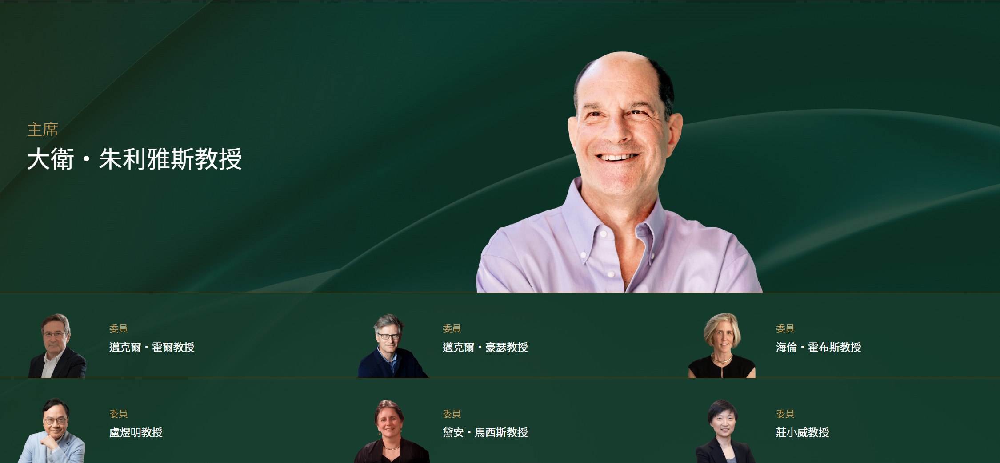

Selection Committees
2026 - 2027 Life Science & Medicine
The Shaw Prize Selection Committees, one for each of the prize categories, evaluate nominations submitted by invited nominators worldwide. They carefully review nominations, propose awardees to the Board of Adjudicators for approval, and the Council for final confirmation. Additionally, the Selection Committees advise on the selection of qualified nominators to maintain a diverse and high-calibre nomination pool.
